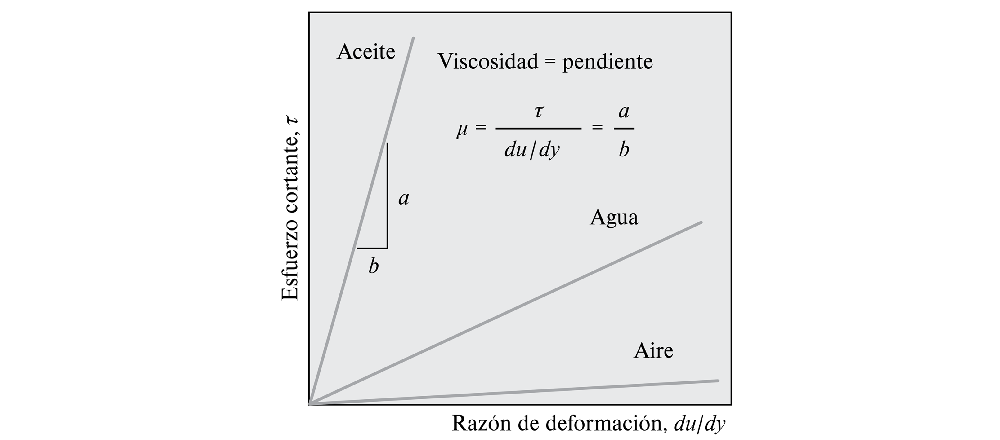
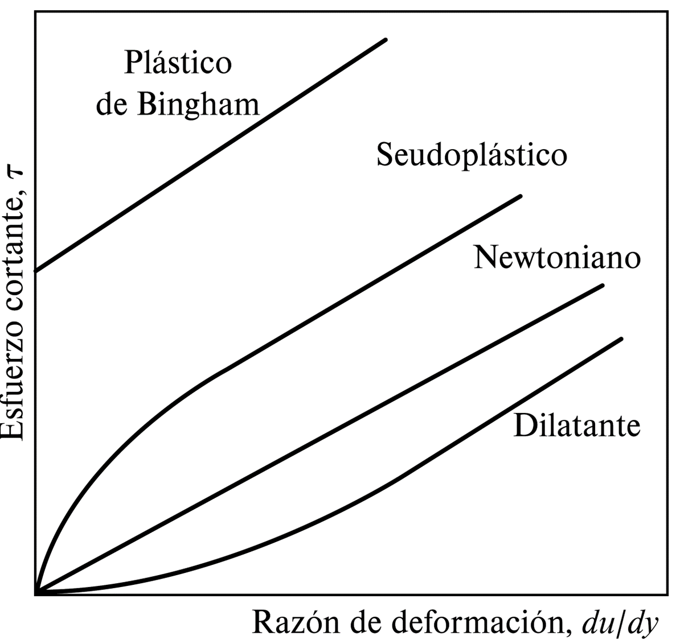
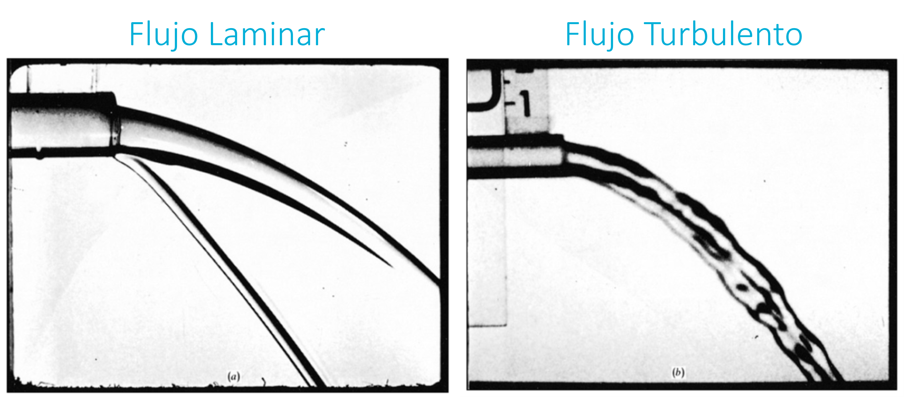

1. Introducción a la mecánica de fluidos#
1.1. Aspectos generales#
1.1.1. Mécanica de fluidos en la ingeniería#
Existen innumerables aplicaciones donde la mecánica de fluidos juega un rol central, tales como conversión de energía, procesos industriales (como minería), medio ambiente, aerodinámica, etc.

1.1.2. Definición de un fluido#
Sustancia en fase líquida o gaseosa
En comparación con un sólido, los enlaces entre moléculas son débiles y no elásticos.
{kind=link}
A partir de esta configuración molecular:
Un sólido se caracteriza por ser un elemento rígido que opone resistencia ante un esfuerzo (dentro del límite elástico)
Un fluido, en cambio, se deforma constantemente tomando la forma del recipiente que lo contiene.
{kind=link}
En el caso de un líquido, el volumen del fluido se mantiene relativamente constante debido a las fuerzas de cohesión. Así, un líquido forma una superficie libre.
El gas, por otro lado, se expande constantemente ya que las fuerzas de coheción son débiles.
1.2. Propiedades de los fluidos#
1.2.1. Densidad (\(\rho\))#
Se define como la masa por unidad de volúmen.
Comúnmente se mide en \(\mathrm{kg/m^3}\) o \(\mathrm{g/cm^3}\).
El recíproco de la densidad es el volumen específico \(v = 1/\rho\).
La densidad de una sustancia depende de la temperatura y la presión:
Líquidos. La variación de la densidad con la presión es despreciable. Por ejemplo, la densidad del agua a \(20°\mathrm{C}\) cambia de \(998~\mathrm{kg/m}^3\) a \(1~\mathrm{atm}\) a \(1003~\mathrm{kg/m}^3\) a \(100~\mathrm{atm}\). Frente a cambios de temperatura, la densidad sufre cambios un poco más significativos, aunque es posible despreciarlos en algunos casos.
Gases. Generalmente obedecen a la ley de gas ideal \(PMv=RT\), donde \(P\) es la presión absoluta, \(M\) es la masa molar del gas, \(T\) es la temperatura y \(R = 8.3145~\mathrm{kJ/kmol~K}\) es la constante universal del gas ideal.
Gravedad específica (\(\mathrm{GE}\)).#
Se define como la razón de la densidad de una sustancia a la densidad de una sustancia estándar, a una temperatura específica (por lo general, agua a \(4°\mathrm{C}\), tal que \(\rho_{\mathrm{H}_2\mathrm{O}} = 1000~\mathrm{kg/m}^3\)).
Es decir:
{kind=link}
Peso específico (\(\gamma\))#
Se define como el peso por unidad de volúmen, y se expresa como:
donde \(g\) es la aceleración gravitacional.
1.2.2. Viscosidad dinámica (\(\mu\))#
Corresponde a la resistencia de un fluido al movimiento o, en otras palabras, a la “fluidez”. Esta propiedad establece una relación entre los esfuerzos cortantes (\(\tau\)) y la taza de deformación de un fluido.
Recordemos que, a diferencia de un sólido, un fluido se deforma constantemente frente a un esfuerzo cortante. Así, en el caso de fluidos es importante considerar la taza de cambio de la deformación en el tiempo, y no la deformación instantanea (como en el caso de sólidos).
Un ejemplo simple es el que se ilustra en la figura. En este caso, el cuerpo (sólido o líquido) entre dos placas planas es sometido a una fuerza cortante debido al movimiento relativo entre ellas.
{kind=link}
Al aplicar una fuerza \(F\) constante, el fluido se deforma contínuamente, mientras que el sólido alcanza una deformación máxima (bajo el límite elástico del sólido). En ambos casos, el esfuerzo cortante se define como \(\tau = F/A\) donde \(A\) es el área de contacto entre el cuerpo y la placa.
Matemáticamente, la taza de deformación corresponde al cambio de la velocidad de un fluido en el espacio. En el ejemplo, el movimiento de las placas induce un perfil de velocidades como se indica en la figura, donde \(u\) es la velocidad en la dirección \(x\).
{kind=link}
En algunos fluidos (como el agua, aire y aceites), la tasa de deformación es proporcional al esfuerzo cortante
y se denominan fluidos newtonianos.
En esta relación \(\mu\) es la viscocidad dinámica. Comúnmente, se mide en \(\mathrm{kg/m}\cdot\mathrm{s}\), \(\mathrm{Pa}\cdot\mathrm{s}\), o centipose \(\mathrm{cP} = 0.001~\mathrm{kg/m}\cdot\mathrm{s}\).
En un fluido newtoniano, la gráfica esfuerzo de corte vs taza de deformación sigue una línea recta cuya pendiente está defnida por \(\mu\).
{kind=link}
Los fluidos que no siguen esta relación lineal se conocen como no newtonianos.
{kind=link}
En esta categoría tenemos:
Seudoplástico, tales como pinturas, y otros fluidos con partículas en suspención.
Dialante, tales como soluciones con almidon o arena.
Plástico de Bingham, tales como Pasta de dientes, mayonesa, ketchup, etc.
Un ejemplo interesante de un fluido no newtoniano, es la mezcla de almidón de maíz con agua (también conocida Oobleck). Otro ejemplo conocido, es el Slime.
El cambio en la viscocidad con la temperatura es diferente dependiendo de si es un gas o un líquido. Esto debido a las diferencias en la estructura molecular entre ambos estados.
En síntesis, si la temperatura aumenta:
líquidos: \(\mu\) disminuye.
gases: \(\mu\) aumenta.

1.2.3. Viscosidad cinemática (\(\nu\))#
Representa la capacidad de fluidez frente a la fuerza de gravedad, y se define como la razón entre la viscosidad dinámica y la densidad, \(\nu = \mu/\rho\)

Generalmente, ambas viscocidades cambian proporcionalmente
{kind=link}
Debido a que los métodos para medir viscocidad cinemática y dinámica son diferentes, es común encontrar ambas unidades en tablas
1.2.4. Medición de la viscosidad#
Los instrumentos para medir la viscosidad son diferentes dependiendo si se desea conocer la viscosidad cinemática o dinámica. Como regla general, cuando el experimento involucre la gravedad como variable, se estará midiendo la viscosidad cinemática. En caso contrario, se estará midiendo la viscosidad dinámica.
{kind=link}
En la figura, el reómetro mide la viscosidad en base al torque aplicado sobre el cilindro. La gravedad actúa perpendicular a la dirección del torque y, por lo tanto, este instrumento mide la viscosidad dinámica. El viscosímetro de bolas, determina la viscosidad en base al tiempo que demora en caer la bola. En este caso, la gravedad influye en el experimento y, por lo tanto, el instrumento mide la viscosidad cinemática.
1.3. Clasificación de flujos#
1.3.1. Flujo externo/interno.#
Se define dependiendo si el fluido fluye por un canal confinado (interno), o sobre alrededor de una superficie (externo).

1.3.2. Flujo compresible/incompresible.#
Corresponde a la variación de la densidad (masa/volumen) del fluido en un flujo.
Flujo incompresible: la densidad se mantiene relativamente constante a lo largo del flujo
Flujo compresible: la densidad cambia a lo largo de flujo debido a cambios de presión.
Como regla general:
Flujo en líquidos se considera incompresible en todos los casos.
Flujo en gases se aproxima como incompresible cuando \(\mathrm{Ma} < 0.3\), donde
\[\begin{equation*} \mathrm{Ma} = \frac{\mathrm{Velocidad~del~flujo}}{\mathrm{Velocidad~del~sonido}}, \end{equation*}\]es el número de Mach.
La velocidad del sonido depende del tipo de gas y la temperatura. Por ejemplo, en el caso del aire a 20°C, la velocidad del sonido es 343 m/s.
1.3.3. Flujo Laminar/Turbulento.#
Corresponde a la clasificación según el grado de orden de un flujo.
{kind=link}
Flujo laminar flujo suave y ordenado donde las líneas de flujo adyacentes se mueve en forma de láminas (o capas). Se presenta comúnmente en flujos a bajas velocidades
Flujo turbulento caracterizado por fluctuaciones caóticas. Comúnmente se presenta a velocidades altas.
Debido a que el flujo laminar representa un fenómeno ordenado, es posible definir modelos matemáticos precisos para caracterizar su movimiento. El flujo turbulento en cambio, es comúnmente descrito mediante modelos empíricos validados por ensayos experimentales.
Show code cell source
from IPython.display import YouTubeVideo
YouTubeVideo('QzuzbwJWlYs', width=700, height=400)
1.3.4. Flujo transiente/estacionario#
Un flujo es estacionario si sus propiedades son constantes con el tiempo. En caso contrario, el flujo es transciente.

Si el flujo es estacionario las propiedades del fluido pueden cambiar en el espacio, pero no en el tiempo.
1.4. Referencias#
Çengel Y. A. y Cimbala M. J. Mecánica de Fluidos: Fundamentos y Aplicaciones, 4ta Ed., McGraw Hill, 2018
Capitulo 1: Introducción y conceptos básicos
Capítulo 2: Propiedades de los fluidos
White F. M. Mecánica de Fluidos, 5ta Ed., McGraw Hill, 2004
Capitulo 1: Introducción